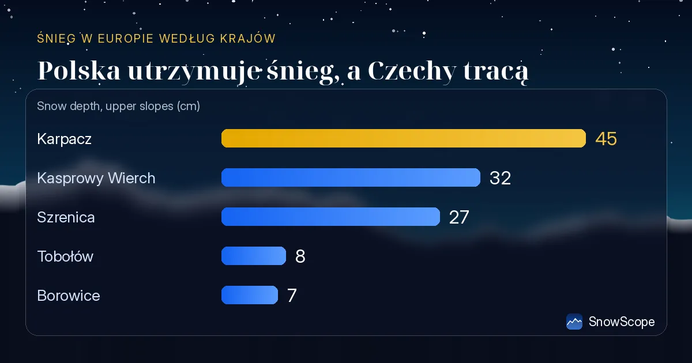

Polska utrzymuje śnieg, a Czechy tracą: 3% pokrycia wobec zera
Polska ma mierzalny śnieg na 370 kilometrach kwadratowych tras narciarskich, głównie w wysokich pasmach, a Czechy straciły pokrycie do zera. Karpacz w Karkonoszach utrzymuje najgłębszy śnieg w regionie na poziomie 45 cm, ale historia tych dwóch sąsiadów pokazuje, jak szybko jesienni topnienia mogą zniszczyć wczesny śnieg sezonu.
Zobacz prognozę śniegu dla Karpacz w aplikacji SnowScopeGrubość śniegu, alerty i mapa 3D, za darmo.
Polska prowadzi, ale przewaga się zmniejsza
Trzy procent tras narciarskich Polski jest białe dzisiaj, w porównaniu z niczym w Czechach. To brzmi jak przewaga, ale jest krucha. Tydzień temu śnieg pokrywał 11% Polski; topnienie z cieplejszym powietrzem z zeszłego tygodnia wyeliminowało dwie trzecie tego pokrycia. Czechy straciły śnieg jeszcze szybciej, spadając z wczesnego pokrycia do nagiego gruntu.
Granica śniegu w Polsce teraz znajduje się na 1200 metrach. Poniżej tego, góry są głównie ciemne. Tylko najwyższe szczyty utrzymują biel, a nawet tam jest cienka gdzie słońce było silne. Karpacz, na 1350 metrach w Karkonoszach, wciąż dotyka gruntu pokrytego 45 cm śniegu. Ta głębokość jest rzeczywista i narty ją znajdą. Ale niższe ośrodki, takie jak Tobołów na 965 metrach, mają tylko 8 cm—skały z łatwością przebiją się przez to.
| Country | White | Deepest resort | Next 7 days |
|---|---|---|---|
| Poland | 3 % | Karpacz | 14 cm |
| Slovakia | 11 % | Ski centrum Dedinky | 18 cm |
| Czechia | 0 % | Lyžařský vlek Malý Šišák | 10 cm |

Gdzie góry wciąż trzymają śnieg
Tatry były najzimniejsze i najwyższe w ostatnie trzy dni i widać to. To pasmo zebrało 22 cm w ostatnich 72 godzinach. Kasprowy Wierch w Tatrach, na wysokości 1958 metrów, ma już 32 cm na ziemi. Beskidy zebrały 11 cm w tym samym oknie; Karkonosze 10 cm. Te trzy pasma to powód, dla którego Polska wciąż ma jakiś śnieg do zgłoszenia.
Mierzone na stacjach meteorologicznych: Karpacz zebrał 9 cm w 72 godzinach, Szrenica 7 cm, Borowice 5 cm. Wzór jest jasny—wysokość ma teraz znaczenie, a północne zbocza blisko grzbietów będą trzymać śnieg najdłużej. Południowe ścianki na niższych strefach są już bez śniegu. Jeśli myślisz o wczesnych przejazdach, idź wysoko i idź szybko.

Słowacja jest lepsza niż obie
Po drugiej stronie granicy, Słowacja radziła sobie lepiej niż Polska czy Czechy. Jedenaście procent tras narciarskich Słowacji jest pokryte śniegiem, a lider tam, Ski centrum Dedinky, ma 38 cm. Słowacja również leży średnio wyżej—jej pasma są ustawione, by łapać zimne powietrze i je utrzymywać. Dla narciarzy w regionie ważących teraz swoje opcje, Słowacja jest bezpieczniejszym wyborem, jeśli śnieg ma znaczenie.
Co mówi model na przyszłość
Jutro, 20 listopada, nasz model śniegu prognozuje 6 cm w całej Polsce, gdy pierwszy porządny opad śniegu sezonu przesuwa się przez region. To punkt zwrotny. W ciągu najbliższych trzech dni spodziewamy się aż 10 cm w Karpaczu. W ciągu siedmiu dni wysokie pasma mogą mieć dodane 14 cm. Czechy też powinny zebrać śnieg—10 cm w następnym tygodniu—więc przewaga się zmniejszy znowu.
Ale prognozowany śnieg może szybko się zmienić. Wczesne przejaazdy są cienkie, a granica śniegu będzie odbijać się z każdą zmianą pogody. Nadchodzący śnieg będzie użyteczny, ale nie głęboki. Skały i stare podłoże wciąż będą widoczne na stromych zboczach i południowych ścianach.
Śnieg według wysokości: wszystko powyżej 1500 metrów
Nasz model pokazuje temperaturę i głębokość śniegu według pasm wysokościowych w zmapowanym regionie. Pomiędzy 500 a 1000 metrów prawie nie ma śniegu—zaledwie 1% pokrycia, prawie 0 cm średniej głębokości. Od 1000 do 1500 metrów, 32% pasa jest białe ze średnią 2 cm. Powyżej 1500 metrów, obraz się zmienia: 100% pokrycia i średnia głębokość 22 cm. Dlatego wysokie ośrodki mają znaczenie, a niższe nie.
Historia topnienia tygodnia
Tydzień temu Polska miała śnieg na 1050 kilometrach kwadratowych. Wczoraj 580. Dzisiaj 370. Trend to topnienie. Ciepła fala z ostatniego tygodnia szybko wypalała niższy śnieg. To, co nam zostało, to uparta część—wysoka, zimna, która nie będzie się łatwo topić. Następny śnieg powinien to zatrzymać, ale tylko jeśli będzie się wiązać z zimniejszym powietrzem i utrzyma się.
Porady dla narciarzy
- Idź wysoko, jeśli idziesz teraz: Kasprowy Wierch i Karpacz mają najwięcej śniegu. Niższe ośrodki poniżej 1000 metrów będą miały zbyt wiele nagich miejsc.
- Uważaj na skały: średnie głębokości 2 cm na średniej wysokości ukrywają wiele gruntu. Przetestuj śnieg przed podjęciem decyzji o trasie.
- Sprawdź prognozę na 20 listopada. Wtedy nowy śnieg dociera w naszym modelu. Głębokość śniegu powinna się poprawić w ciągu tygodnia, jeśli system będzie poruszać się zgodnie z oczekiwaniami.
- Jeśli Czechy to twój plan, poczekaj aż po opadzie śniegu. Zero pokrycia teraz oznacza słaby narciarstwo; 10 cm za tydzień oznacza, że będzie warte podróży.
- Wczesny śnieg sezonu jest często lepki i twardy. Spodziewaj się zmiennych warunków. Konsultuj oficjalny biuletyn lawinowy dla twojego pasma przed wejściem w poza trasę.
About these numbers
Resort snow depths are the deepest snow on the resort's upper slopes from the SnowScope snow model (about 1 km, run of 19 listopada); they are estimates for an area, not a measurement at one point. Station values are measurements on the date shown. Forecasts can change. Always read the official avalanche bulletin before going off-piste.
Cite this report
For research, teaching or the press: the numbers and charts are free to reuse under CC BY 4.0 with this citation.
SnowScope (2026), Polska utrzymuje śnieg, a Czechy tracą: 3% pokrycia wobec zera, https://snowscope.app/blog/pl/2026/11/poland-snow-vs-neighbours-19-november-2026.html, accessed 2026-11-19
SnowScope (Atlas Labs). (2026, November 19). Polska utrzymuje śnieg, a Czechy tracą: 3% pokrycia wobec zera. SnowScope snow reports. https://snowscope.app/blog/pl/2026/11/poland-snow-vs-neighbours-19-november-2026.html
BibTeX
@misc{snowscope2026polandsnowvsneighbours19,
author = {{SnowScope (Atlas Labs)}},
title = {Polska utrzymuje śnieg, a Czechy tracą: 3% pokrycia wobec zera},
year = {2026},
month = nov,
howpublished = {\url{https://snowscope.app/blog/pl/2026/11/poland-snow-vs-neighbours-19-november-2026.html}},
note = {Published 2026-11-19 13:58 UTC; accessed 2026-11-19}
}· CC BY 4.0 · Methods, data and tools →
Karpacz: snow and temperature by height, this winter vs last (tools) →
Follow Karpacz
Za darmo: wiadomość, gdy nadchodzi świeży śnieg, i prognoza co rano.